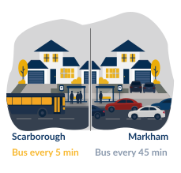

By Siya Patel, Mustafa Al-Shamaa, & Matthew Tan | Illustrated by Bryce Celzo | Spring 2026 Issue | Business Strategy
North American car dependency isn’t simply about geography or consumer preference. In reality, it was built by policy choices: cheap gas, road-first infrastructure, low-density planning that never accounted for transit, and a chronic failure to fund frequent service. Together these made the car the convenient default because the environment was not designed for other outcomes.
INTRODUCTION
In 2019, China’s high speed rail (HSR) ridership surpassed two billion passengers. A system that did not exist two decades earlier had in a single generation reshaped how a nation of over a billion people moved. North America, by contrast, spent the same decades attempting to build a similar train system, facing delay after delay due to obstacles spanning from geography to policy and funding. The size of the continent has usually been the first factor to be blamed, followed by a culture ingrained to use cars. The way this culture formed is often attributed to the influence of automakers on government policy, with the infamous General Motors streetcar conspiracy being one of the most controversial. This explanation falls flat when it comes to Canadian cities, which tore out their streetcars and became car-dependent a few years later, just without an automaker pushing for it. The real driver of change was ordinary public policy, with cities choosing to run buses on government funded roads, rather than rail that needed to be separately maintained. Car dependency in North America came not only from geography, culture or scheming corporations, but decisions made by policymakers instead. The choice was made to keep gasoline cheap, spend heavily on roads and highways, and lower funding on transit that would have made it faster and more reliable. Together these choices became the final nail in the coffin that sealed the fate of a heavily car-dependent North America.
Why Lobbying is the First Suspect
From the late 1930s through the 1940s, General Motors aggressively pursued cities and towns to sell their streetcars and trolleys, with the goal of buying, dismantling and shutting them down. Several other corporations like Firestone Tire and Standard Oil amongst others aided in the effort, eventually making it so these companies profited from people buying gasoline through Standard Oil in order to run cars and buses manufactured by GM, and driving on tires purchased from Firestone.
These companies were eventually charged with an antitrust violation, though the consequences were minor, with the corporations fined $5000, and their executives $1 each. It is widely believed that the contemporary Truman government did not push for tougher sanctions as these companies were vital in the war effort in Korea and against the Soviet Union.
While the scheme was real, and it is not disputed that it accelerated the end of streetcars in American cities, it did not singlehandedly cause the decline. Streetcar systems across North America were already at this point losing riders, and as the Canadian examples show, cities with no such conspiracies also dismantled transit and adopted cars.
Dr. Jonathan English, an expert in infrastructure and transportation policy, and the former Director of Policy (Transportation, Infrastructure, and Trade) at the Toronto Region Board of Trade, shed some light on why the streetcar system was already crumbling. He explains the shift to cars saying, “The reason that car ownership exploded is because people really liked to drive. It was really pleasant to be able to drive rather than to take a crowded streetcar that got dilapidated during the Second World War, when they didn't spend anything on maintenance.” If streetcars disappeared because of a mix of public demand and corporate influence, it’s worth questioning whether today’s version of the lobbying narrative rings true. Dr. English does not think so. He argues that lobbying exists on both sides, with the growing transit construction industry pushing harder for greater public investment, while automakers push for policies that benefit driving. In the end, neither group is the deciding force: “Does it have an effect on the margin? Sure. Is it the decisive factor? No, not really.”
If Not Lobbying, Then What?
The quality of a city's transit is usually assumed to depend on conditions that feel fixed: density, layout, and cultural preferences..
In reality, it is the opposite. Cities are not created dense or sprawling, and then choose to implement a transit system that either fits or fails. They are shaped by the transportation built into them. As Dr. English puts it, “cities develop the way they do because of the transportation that's available.” Build highways and neglect transit, and development organizes itself around highways. Build frequent transit, and density gathers around it. The two are bound in a feedback loop, each producing the other: low density makes cars necessary, and car dependence makes low density possible.
This is where the cultural explanation, that North Americans simply love their cars in a way Europeans and Asians do not, starts to raise questions. The affection is real but it is as a direct result of the built environment. This same logic explains why cultural habits don’t simply transfer. Immigrants who relied on transit daily in another country will often stop using it here, not because their preferences changed, but because the service they encounter upon arrival is vastly inferior.. What looks like a cultural aversion is often just a response to a system that does not bring enough benefit.
If culture is shaped by the structure that creates it, what choices shaped that environment in the first place? Two decisions can be considered the most crucial factors.
The first was infrastructure. In North America, roads came standard. When a new area was developed, highways and expressways were simply assumed as the default setting of growth. Transit was treated as an optional extra, and optional extras must justify themselves. Dr. Pierre Filion, Professor at University of Waterloo at the School of Planning, describes roads as “the default, and of course they're going to be there.” Transit, by contrast, “becomes a controversial political decision. Can we afford it? Will there be enough density to support it? How many people are actually going to use that?” These questions, repeated across thousands of development decisions over decades, resulted in an imbalance that determined the outcome long before this debate began. Fuel policy reinforced the pattern as North America had abundant domestic oil and kept gasoline cheap, while Europe taxed its imported fuel to discourage consumption. Cheap gas made driving artificially affordable in North America, shifting the cost of every trip toward the car.
The second decision was less obvious, and in English's view more decisive than any grand plan: the steady starvation of frequent, everyday transit service. The problem was never that North America failed to build impressive rail lines, but that it laid expensive infrastructure over a weak base of local service, and then wondered why so few people rode. What determines whether people ride is not built form, culture, or geography. It is frequency.
This pattern exists within a single metropolitan area. In Scarborough, where the TTC bus comes every five minutes, driveways sit half empty. Cross the boundary into Markham, where the houses look the same and the lots are often smaller, the cars spill out of every driveway and onto the street, parked sideways and every which way. The explanation is not that the people are different. As English puts it, “the YRT bus comes once every 45 minutes, and the TTC bus comes once every five minutes. There’s nothing more to it than that." A bus that runs once an hour, stops after seven in the evening, and skips Sundays is not a service anyone with another option will choose. A bus that arrives every five minutes is, even when it is slow and crowded.

English explains this with an analogy. Imagine a supermarket that opens a single aisle, sees that it is not busy, and concludes there is no demand for groceries, so it never opens the rest of the store. But the aisle was never empty because people do not want food. It was empty because a one-aisle store is barely worth visiting. Transit works the same way. A city runs a bus once an hour, watches it arrive nearly empty and then uses the low ridership to justify never improving the service.
Part of why this happens comes down to how funding is allocated. Large capital projects, new subway and rail lines can draw what English calls “free money” from provincial and federal governments because politicians are eager to build them and be there when the ribbon is cut. What is overlooked is the operating budget that keeps a local bus running frequently, all day long.
There is also the matter of the price behind building in the first place. Dr. English points out that construction costs across the English-speaking world are at a point where Canada, Britain and the United States pay more for comparable transit projects than countries in Europe and East Asia. This is a tough barrier to overcome as it is not always whether a city is able to build, but how much it has to pay to do so.
What the Car Gets Right
For many trips, the car is simply better and this has nothing to do with advertising or manufactured desire. A car gives you a private, climate-controlled space, your own music, a seat to yourself, and a trip with no transfers or waiting in the cold. Dr. English is blunt about this even as he stresses service and frequency, pointing out that driving may be slow but “you're still sitting in an air-conditioned car by yourself, listening to your music in a comfortable seat.”
No realistic policy can make driving unpleasant enough to push a committed driver onto a bus, because the car is a great invention that solved real problems and delivered comfort.
This applies to traveling between cities, where oftentimes transit falls short. Canada is a vast nation with a population heavily concentrated in key areas, meaning for longer trips a plane beats trains on both time and cost. For a continent this size, European-style rail just does not fit. Dr. Filion voiced his skepticism for current high-speed rail proposals, questioning whether dedicating that amount of funding building an entirely new track for a third of the speed makes sense, when travelers are already working and taking calls on slower existing lines.
He argues this investment only makes sense if the new line is paired with transit-oriented towns, with communities that have a robust local transit system that keeps them connected to these train lines in the first place.
Not Too Late to Make a Change
If car dependency exists as a result of policy, it can be rectified the same way. The solution is not to tear down suburbs or push funding into expensive high speed rail projects, but rather something less glamorous. Run buses more often. Dr. English provides the example of Brampton, which in the past few years has made an effort to revamp its basic bus services. By investing in more buses and making routes more frequent, they have been able to grow ridership roughly 250% in a short time frame.
This is what the argument comes down to. Density, sprawl, and a culture built around car usage are the typical reasons stated for why transit is not as effective in North America as Europe and Asia. But these are not conditions North America was simply born with. They have built up over time, after every decision made on what project to fund and what to treat as an option.
The good news is, there is nothing about North America or its cities that makes good transit systems unachievable. As Dr English puts it, “there is nothing fundamentally wrong with Canada that we can’t do it, it’s just we generally don’t.” Car dependency was constructed from ordinary decisions, so different decisions can rebuild it entirely.